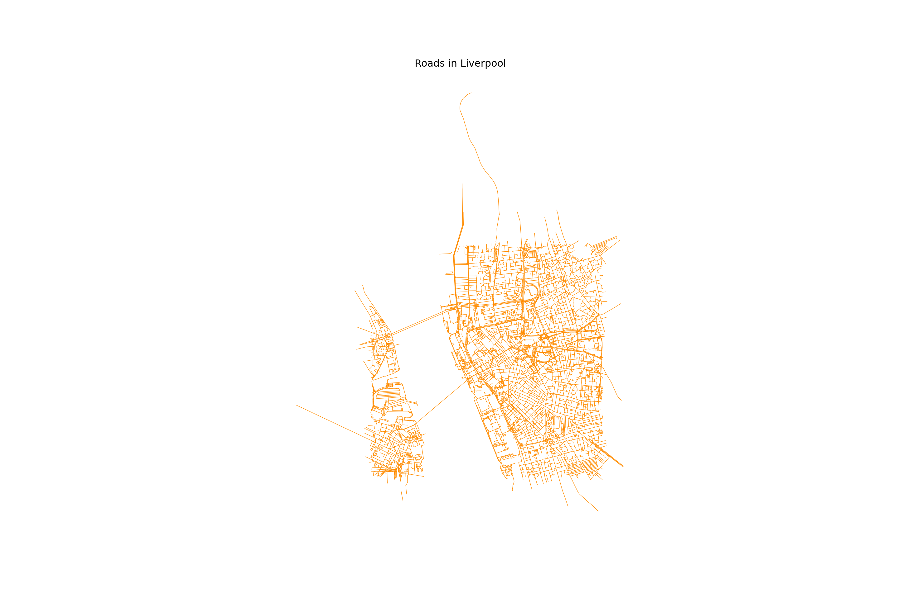
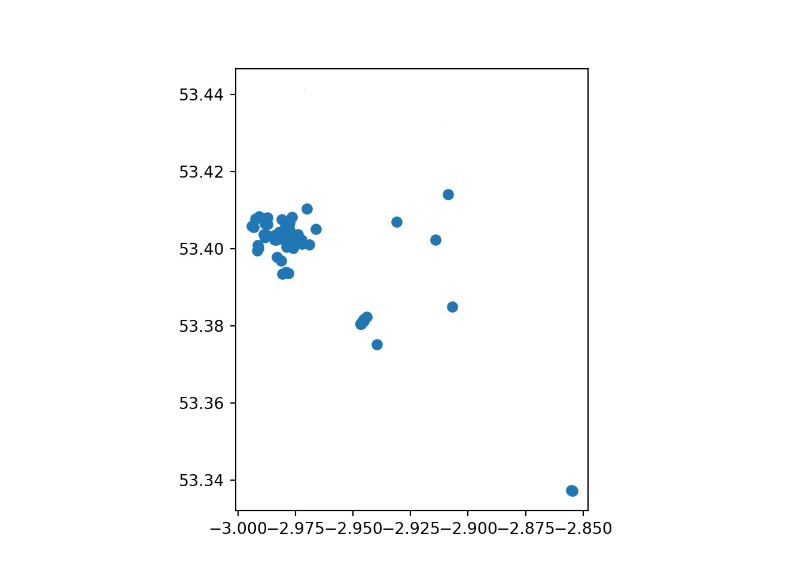
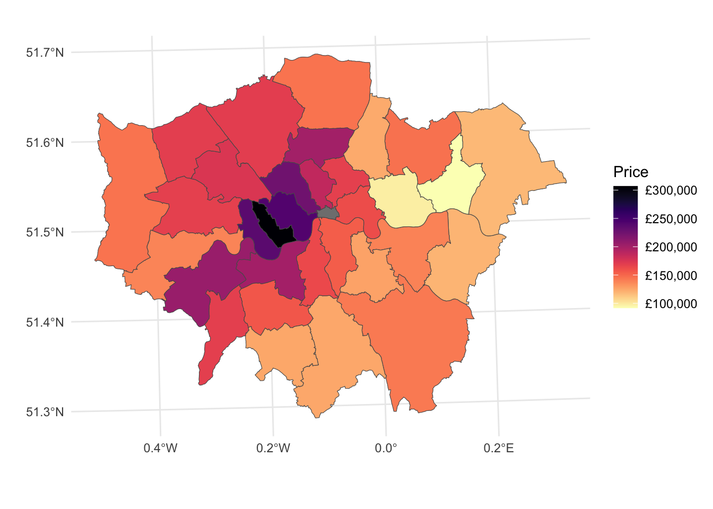
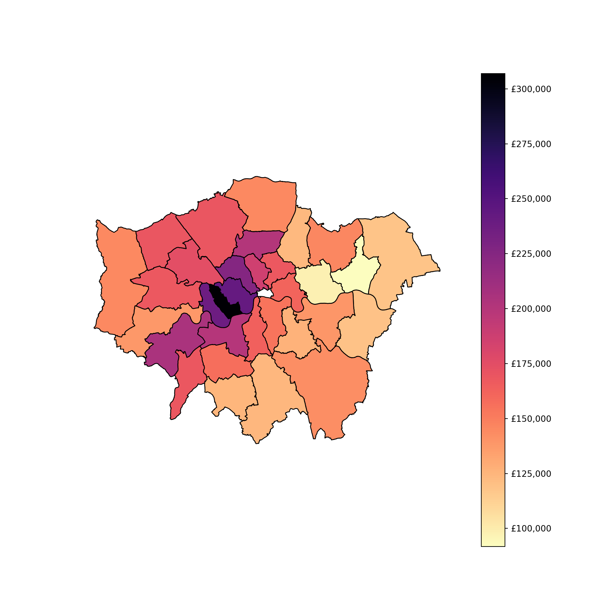

library(dplyr)
library(ggplot2)
library(sf)
library(viridis)
library(viridis)
library(osmdata)Do-It-Yourself
In this session, we will practice your skills in mapping with R and Python. Create a new quarto or jupyter notebook document you can edit interactively, and let’s do this!
import geopandas as gpd
import pandas as pd
import osmnx as ox
import matplotlib.pyplot as plt
import matplotlib.colors as mcolors
from matplotlib import cm
from matplotlib.ticker import FuncFormatterData preparation
Polygons
For this section, you will have to push yourself out of the comfort zone when it comes to sourcing the data. As nice as it is to be able to pull a dataset directly from the web at the stroke of a url address, most real-world cases are not that straight forward. Instead, you usually have to download a dataset manually and store it locally on your computer before you can get to work.
We are going to use data from the Consumer Data Research Centre (CDRC) about Liverpool, in particular an extract from the Census. You can download a copy of the data at:
Important
You will need a username and password to download the data. Create it for free at:
https://data.cdrc.ac.uk/user/register
Then download the Liverpool Census’11 Residential data pack
Once you have the .zip file on your computer, right-click and “Extract all”. The resulting folder will contain all you need. Create a folder called Liverpool in data folder you created in the first Lab.
library(sf)
lsoas <- read_sf("data/Liverpool/Census_Residential_Data_Pack_2011/Local_Authority_Districts/E08000012/shapefiles/E08000012.shp")lsoas = gpd.read_file("data/Liverpool/Census_Residential_Data_Pack_2011/Local_Authority_Districts/E08000012/shapefiles/E08000012.shp")Lines
For a line layer, we are going to use a different bit of osmdata functionality that will allow us to extract all the highways. Note the code cell below requires internet connectivity.
highway <- opq("Liverpool, U.K.") %>%
add_osm_feature(key = "highway",
value = c("primary", "secondary", "tertiary")) %>%
osmdata_sf()
ggplot() +
geom_sf(data = highway$osm_lines, color = 'darkorange') + theme_minimal() 
tags = {"highway": True} #OSM tags
roads = ox.features_from_address("Liverpool, United Kingdom", tags = tags, dist = 2000)
roads = roads.reset_index()
# sometimes building footprints are represented by Points, let's disregard them
roads = roads[roads.geometry.geom_type == 'LineString']
fig, ax = plt.subplots(1, 1, figsize=(15, 10))
ax.set_title("Roads in Liverpool")
ax.set_axis_off() # we don't need the ticks function
# only roads within the extent of the buildings layer
roads.plot(ax=ax, color = 'darkorange', lw = 0.5) #linewidth can be also passed as lw
# Display the plot
plt.show()
Points
For points, we will find some POI (Points of Interest) : pubs in Liverpool, as recorded by OpenStreetMap. Note the code cell below requires internet connectivity.
bars <- opq("Liverpool, U.K.") %>%
add_osm_feature(key = "amenity",
value = c("bar")) %>%
osmdata_sf()
ggplot() +
geom_sf(data = bars$osm_points) + theme_minimal() 
query = "Liverpool, United Kingdom"
bars = ox.features_from_place(query, tags={"amenity": ["bar"]})
bars.plot()
plt.show()
Tasks
Task I: Tweak your map
With those three layers, try to complete the following tasks:
Make a map of the Liverpool neighborhoods that includes the following characteristics:
Features a title
Does not include axes frame
Polygons are all in color
#525252and 50% transparentBoundary lines (“edges”) have a width of 0.3 and are of color
#B9EBE3Includes a basemap different from the one used in class
Note
Not all of the requirements above are not equally hard to achieve. If you can get some but not all of them, that’s also great! The point is you learn something every time you try.
Task II: Non-spatial manipulations
For this one we will combine some of the ideas we learnt in the previous block with this one.
Focus on the LSOA liverpool layer and use it to do the following:
Calculate the area of each neighbourhood
Find the five smallest areas in the table. Create a new object (e.g. smallest with them only)
Create a multi-layer map of Liverpool where the five smallest areas are coloured in red, and the rest appear in grey.
Task III: Average price per district
districts <- read_sf("data/London/Polygons/districts.shp")
housesales <- read.csv("data/London/Tables/housesales.csv") # import housesales data from csv
housesales_clean = housesales %>%
filter(price < 500000) %>%
st_as_sf(coords = c(17,18)) %>%
st_set_crs(27700) districts = gpd.read_file("data/London/Polygons/districts.shp")
housesales = pd.read_csv("data/London/Tables/housesales.csv")
housesales_f = housesales[housesales['price'] < 500000]
housesales_gdf = gpd.GeoDataFrame(
housesales_f, geometry=gpd.points_from_xy(housesales_f.greastings, housesales_f.grnorthing), crs="EPSG:27700"
)This one is a bit more advanced, so don’t despair if you can’t get it on your first try. It relies on the London data you used in the Lab. Here is the questions for you to answer:
What is the district with the highest housing prices in London?
Answering this questions involve 3 steps:
1. Performing a spatial join (st_join) between the district layer (polygons) and the households (points).
2. Aggregating the data at district level: group_by & summarise()
3. Figure out the district with the highest price
Really try not to open the answer below right away.
R Answer
Spatial overlay between points and polygons
housesales_districts <- st_join(districts, housesales_clean)Aggregate at district level
housesales_districts_agg <- housesales_districts %>%
group_by(DIST_CODE, DIST_NAME) %>% # group at district level
summarise(count_sales = n(), # create count
mean_price = mean(price)) # average price`summarise()` has grouped output by 'DIST_CODE'. You can override using the
`.groups` argument.head(housesales_districts_agg)Simple feature collection with 6 features and 4 fields
Geometry type: POLYGON
Dimension: XY
Bounding box: xmin: 515484.9 ymin: 156480.8 xmax: 554503.8 ymax: 198355.2
Projected CRS: OSGB36 / British National Grid
# A tibble: 6 × 5
# Groups: DIST_CODE [6]
DIST_CODE DIST_NAME count_sales mean_price geometry
<chr> <chr> <int> <dbl> <POLYGON [m]>
1 00AA City of London 1 NA ((531028.5 181611.2, 531…
2 00AB Barking and Dagenh… 38 91802. ((550817 184196, 550814 …
3 00AC Barnet 83 169662. ((526830.3 187535.5, 526…
4 00AD Bexley 82 119276. ((552373.5 174606.9, 552…
5 00AE Brent 49 174498. ((524661.7 184631, 52466…
6 00AF Bromley 124 142468. ((533852.2 170129, 53385…
Python Answer
# Spatial join
housesales_districts = housesales_gdf.sjoin(districts, how="inner", predicate='intersects')
# Aggregate at district level
housesales_districts_agg = housesales_districts.groupby(['DIST_CODE', 'DIST_NAME']).agg(
count_sales=('price', 'size'), # count number of sales
mean_price=('price', 'mean') # calculate average price
).reset_index()
# Merge the aggregated data back with the original GeoDataFrame to retain geometry
housesales_districts_agg = districts[['DIST_CODE', 'geometry']].drop_duplicates().merge(
housesales_districts_agg, on='DIST_CODE'
)Once that’s done, create a map of the data
R Answer
Use ggplot if you are working in R and if you’re feeling adventurous the function scale_fill_viridis() to make your map look especially good.
# map housesales by wards
map3 <- ggplot()+
geom_sf(data = housesales_districts_agg, inherit.aes = FALSE, aes(fill = mean_price)) + # add the district level housing price
scale_fill_viridis("Price", direction = -1, labels = scales::dollar_format(prefix = "£"), option = "magma" )+ # change the legend scale to £ and the colour to magma
xlab("") +
ylab("") +
theme_minimal() # choose a nicer theme https://ggplot2.tidyverse.org/reference/ggtheme.html
map3
Python Answer
# Function to format currency with £
def currency(x, pos):
return f'£{int(x):,}'
# Create a colormap similar to Viridis magma
cmap = plt.colormaps.get_cmap('magma_r')
# Plotting the map
fig, ax = plt.subplots(figsize=(10, 10))
# Plot the district level housing price
housesales_districts_agg.plot(column='mean_price', ax=ax, legend=True,
cmap=cmap, edgecolor='black')
# Modify the legend scale to £
formatter = FuncFormatter(currency)
cbar = ax.get_figure().get_axes()[1] # Get the color bar
cbar.yaxis.set_major_formatter(formatter)
# Remove x and y axis labels
ax.set_xlabel('')
ax.set_ylabel('')
# Set theme to minimal
ax.set_axis_off()
# Show the plot
plt.show()